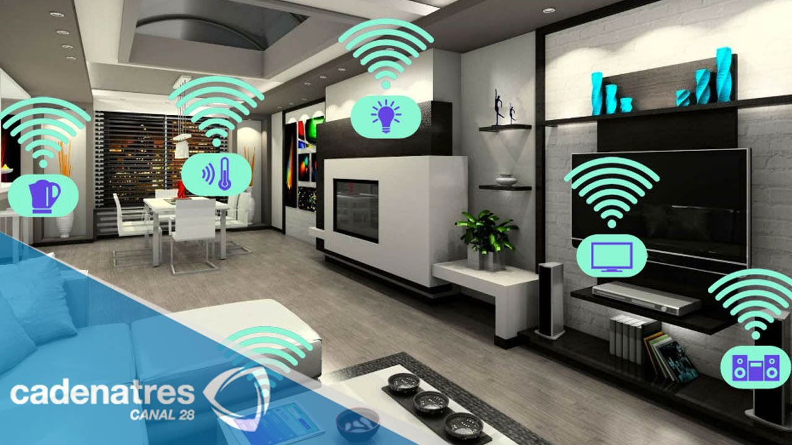

Opera entre 3V y 5V, tiene un rango de medición de temperatura de 0°C a 50°C con una tolerancia de más o menos 2°C. En cuanto al rango de medición de humedad es de 20% a 90% RH y la resolución es de 1% RH.
Opera entre 3.3V y 5V, tiene un consumo de menos de 20mA y tiene salida analógica. El área de detección es de 4cm de largo y 1.6cm de ancho.
El HX711 trabaja entre 2.7V y 5V, tiene un consumo menor de 1.5mA, se puede seleccionar 10SPS o 80SPS velocidad de datos de salida. La celda de carga puede operar entre 3V y 12V, y tiene una protección IP65.
Se llevara una estadística de la alimentación del animal, es decir, la cantidad de comida que está ingiriendo diaria y mensualmente, así como la cantidad de agua y de esta manera poder llevar un seguimiento de su dieta y saber si esta corresponde a la raza y edad de la mascota. También, en caso de comportamientos anómalos en su alimentación, poder comparar estos eventos con la temperatura y humedad en el aire y ver si se encuentran relacionados. Todas estas medidas se podrán visualizar como gráficas y tablas en el celular del dueño, así como mensajes de alerta en caso de que el perro esté comiendo o bebiendo fuera de los rangos respectivos.